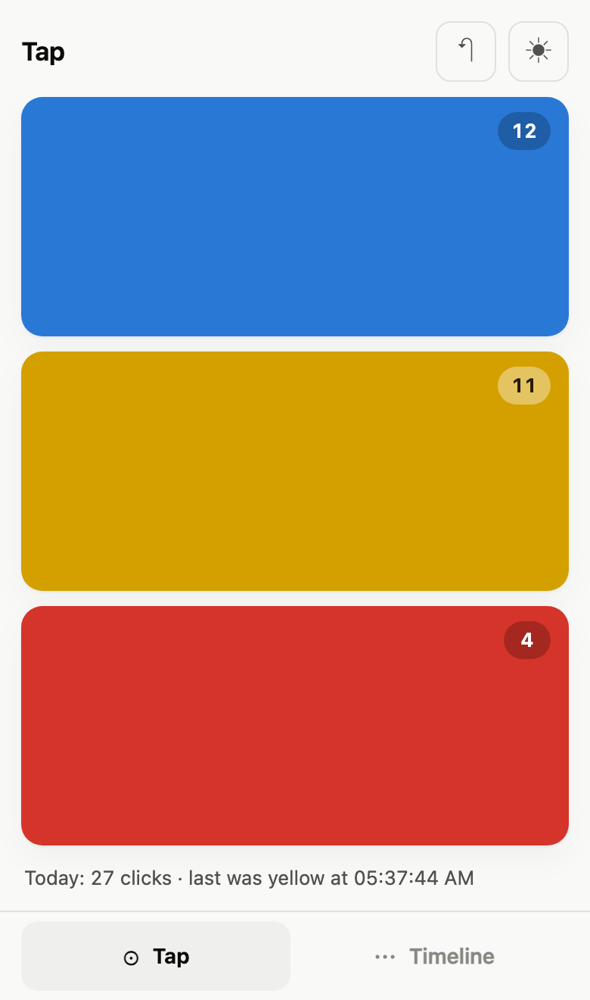

Count the dots.
A counter for anything you can be bothered to count. Three buttons, one timeline, and no cloud whatsoever.
Open the app →Free · No account · Works offline
Click · Visualize · Analyze
Click
Three big buttons: blue, yellow, red. Tap one. That is the whole interface — no setup, no categories to name, no onboarding carousel.
Visualize
Every tap is stamped with the time. The timeline shows how many of each colour you got, hour by hour or day by day.
Analyze
Look at the shape of your week and draw your own conclusions. We have no opinion about what blue means. We genuinely do not know.
Anything, anywhere, locally — just like a notebook
Anything
Nobody ever asks what the colours are for. Coffees, cigarettes, push-ups, contractions, birds, times the dog barked at nothing.
Anywhere
Add it to your home screen and it keeps working with no signal at all. It is a web page doing a convincing impression of an app.
Locally
Nothing leaves your device, because there is nowhere for it to go. No account, no server, no analytics inside the app. Not a promise about how we handle your data — there is no we to handle it.
Just like a notebook
Including the annoying part: lose the phone, lose the notes. There is an Export button, and a matching Import. Please use them.
What it looks like


What people count
The honest bit
It is a three-button counter. It will not sync, remind you, gamify you, or send you a year-in-review. It stores a list of times in your browser and draws them. If that is all you needed, it is free and it is right here.